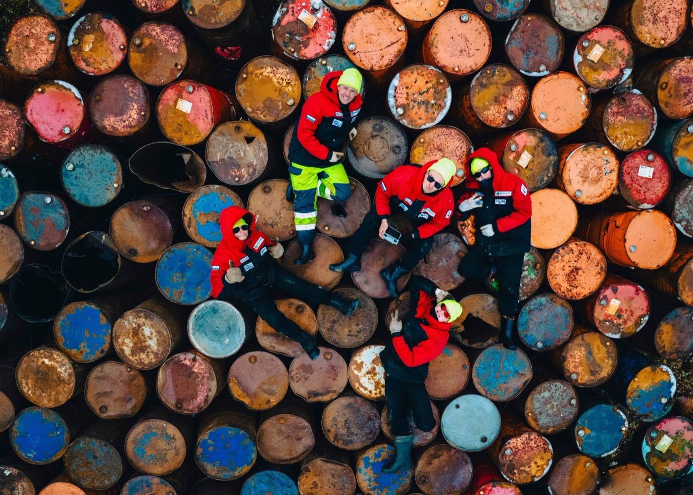

„Валент“ ЕООД е специализирана фирма за почистване на резервоари в петролни бази, бензиностанции и корабни горивни танкове. Дейността обхваща приемане, съхранение и реализация на петролни продукти, транспорт, както и събиране, транспортиране и временно съхраняване на опасни отпадъци — нефтоводни смеси, утайки и ръжда.
Основана1995 г.
УправителКрасимир Андронов
Седалищегр. Аксаково, обл. Варна
РазрешителниМОСВ, чл. 12 и чл. 37
ОбхватЦялата страна